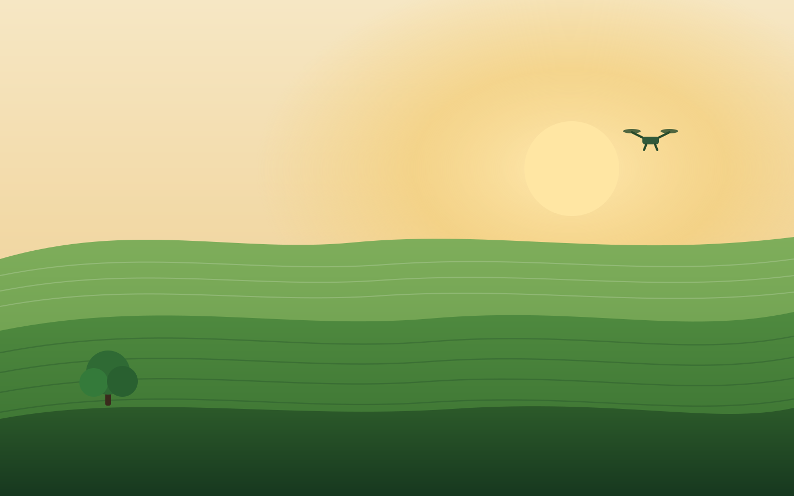

Sensores no solo
Medem umidade, temperatura e nutrientes em tempo real. Só se irriga e aduba onde é preciso — economizando água e evitando excesso de fertilizante.

Concurso Agrinho 2026 · Paraná
Produzir mais não significa destruir. Quando tecnologia e natureza trabalham juntas, o campo alimenta o mundo e ainda devolve vida ao planeta.
01 · O tema
Durante muito tempo acreditou-se que crescer na lavoura e proteger a natureza eram caminhos opostos. Hoje sabemos que são o mesmo caminho. O agro brasileiro é forte justamente quando cuida do solo que o sustenta, da água que o alimenta e das florestas que regulam o clima.
Este projeto convida estudantes, professores e a comunidade escolar a enxergar a fazenda do futuro: um lugar onde sensores, drones e inteligência artificial convivem com abelhas, rios limpos e árvores nativas. Aqui, tecnologia serve à vida.
02 · Agricultura inteligente
As mesmas ferramentas que aumentam a colheita ajudam a gastar menos e a poluir menos. Passe o mouse pelos cartões e descubra como.
Medem umidade, temperatura e nutrientes em tempo real. Só se irriga e aduba onde é preciso — economizando água e evitando excesso de fertilizante.
Algoritmos analisam clima e imagens para prever pragas e a hora certa da colheita, reduzindo perdas e o uso de defensivos.
Sobrevoam a lavoura e enxergam o que o olho não vê: falhas no plantio, doenças e áreas que precisam de cuidado imediato.
Máquinas guiadas por GPS aplicam a dose exata em cada metro do campo. Menos desperdício, mais produtividade e solo protegido.
03 · Meio ambiente
Cada recurso natural bem cuidado se transforma em produção duradoura. Preservar é, antes de tudo, um bom negócio para o campo e para todos nós.
Recompor áreas com espécies nativas devolve sombra, abriga animais e protege o solo contra a erosão.
Matas ciliares protegem rios e nascentes. Reúso e irrigação inteligente garantem água limpa para o futuro.
Plantio direto e rotação de culturas mantêm a terra viva, fértil e cheia de organismos que a fazem produzir.
Abelhas polinizam, aves controlam pragas e a variedade de vida deixa toda a lavoura mais resistente.
04 · Sustentabilidade
Sustentável é o campo que reaproveita, gera a própria energia e devolve ao ambiente mais do que retira.
Restos de colheita viram adubo e biogás. O que seria lixo volta como energia e nutriente para a próxima safra.
Painéis solares e biomassa abastecem a fazenda com energia renovável, reduzindo custos e dependência de combustíveis fósseis.
Árvores e solos saudáveis capturam gás carbônico. A lavoura deixa de ser problema e passa a ser parte da solução climática.
05 · Você sabia?
Cerca de 3 em cada 4 tipos de alimento que chegam ao prato dependem, direta ou indiretamente, da polinização feita por abelhas e outros insetos. Proteger a biodiversidade é proteger a comida.
Em um punhado de terra saudável existem mais microrganismos do que pessoas no planeta. São eles que transformam matéria orgânica em nutrientes para as plantas.
Sistemas que regam apenas quando o sensor detecta necessidade chegam a reduzir o consumo de água pela metade, deixando mais recurso para rios, cidades e para a própria lavoura em épocas de seca.
Os sistemas agroflorestais misturam árvores e cultivos. A sombra e as raízes protegem o solo, atraem polinizadores e, com o tempo, elevam a produtividade da área.
06 · Em números
de pessoas para alimentar até 2050 — sem abrir novas florestas.
da água doce usada no mundo vai para a agricultura. Cada gota conta.
de redução no uso de insumos é possível com agricultura de precisão.
planeta. Não existe plano B para o campo nem para a vida.
07 · Teste seus conhecimentos
Quatro perguntas rápidas. Responda e descubra o quanto você já sabe sobre o agro do futuro.
Pergunta 1 de 4
08 · Faça as contas
Responda cinco hábitos do dia a dia e descubra o seu índice — com uma dica personalizada.
09 · Evolução
Por milênios, plantar dependia de músculos, enxadas e bois. Pouca área, muita dependência do clima.
Tratores e máquinas multiplicam a área cultivada, mas trazem também novos impactos ao solo e ao ambiente.
Sementes melhoradas e insumos aumentam a produção mundial. A humanidade aprende que produzir também exige responsabilidade.
Sensores, satélites e IA fazem a fazenda pensar. Produz-se mais com menos recurso e menos impacto.
A meta é devolver mais do que se retira: solos que capturam carbono, biodiversidade em alta e alimento para todos.
10 · Galeria
11 · Vozes do campo
12 · Perguntas frequentes
Não necessariamente. O impacto depende de como se produz. Com técnicas sustentáveis é possível colher mais em menos espaço, poupando florestas e recursos naturais.
Cada vez menos. Aplicativos de clima, sensores baratos e cooperativas levam inovação também à agricultura familiar, que produz boa parte da comida do nosso dia a dia.
Muito! Evitar desperdício de comida, economizar água e energia, separar o lixo e espalhar essas ideias. Consumo consciente também é sustentabilidade.
Porque o futuro do agro é também o futuro do planeta. Entender esse equilíbrio forma cidadãos capazes de cuidar da terra que nos alimenta.
13 · Fale com o projeto
Tem uma ideia, elogio ou dúvida? Escreva pra gente. (Este é um formulário demonstrativo, sem envio real.)